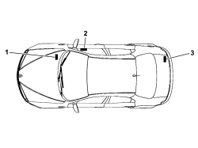
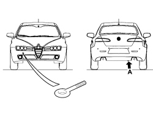
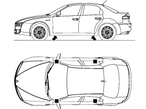
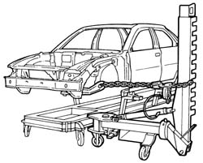
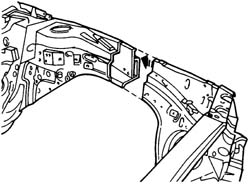
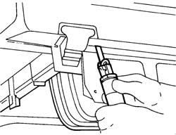
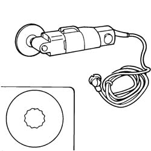
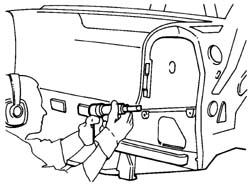
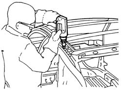
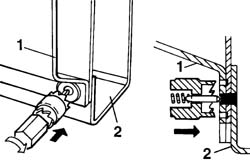
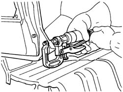
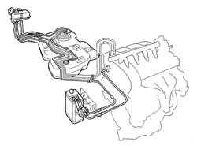
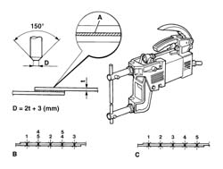
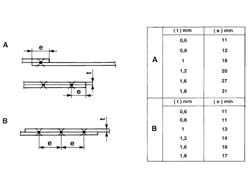
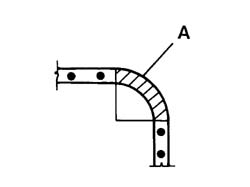
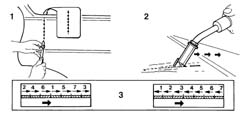
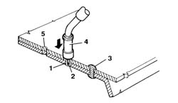
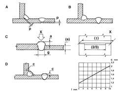
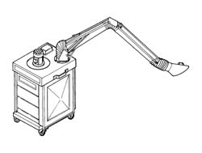
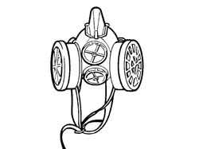
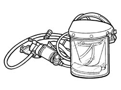
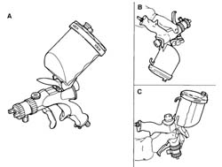
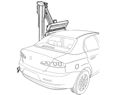
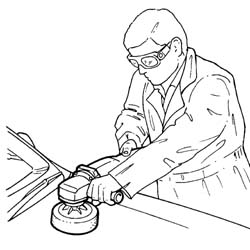
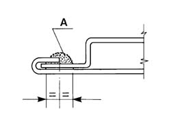
VEHICLE REPAIRS
Vehicle identification data
The vehicle is equipped with the following identification plates:
-
1. V.I.N. Plate
-
2. Bodyshell marking
-
3. Body paintwork identification plate.
Vehicle towing points
The vehicle is equipped with two threaded seats one at the front and one at the rear for the installation of the tow hook present in the housing inside the spare wheel, located in the boot under the carpet.

|
When towing the vehicle, it is compulsory to resepct specific highway code regulations relating to the tow hook and procedures for towing on the road. Clean the threaded seat carefully before tightening the hook. Before towing, make sure that the tow hook is fully tightened. Ensure that the electronic key is inserted in the TEG Reader If the key is extracted the steering lock will come on automatically and it will be impossible to steer the wheels. If it is necessary to disconnect the battery, carry out the operation only with the electronic key inserted in the TEG Reader. This avoids the need to engage the steering lock. With the engine switched off the brake servo and the power steering are not working so greater effort is required on both the brake pedal and the steering wheel. |
Vehicle lifting points
To raise the vehicle using lift arms or a workshop lift, arrange the ends of the arms or the lift in the areas shown in the diagram only.
|
|
Before raising the vehicle using portable lifts, lock the wheels by placing chocks in front of (behind) the front (rear) wheels. After having raised the vehicle, support it using safety stands. |
General safety instructions
The activities connected with the bodywork repair operations involve the use of specialist equipment as well as handling chemical products which must be done in accordance with the supplier''s recommendations.
Special attention should therefore be paid to:
-
The correct use of materials, instruments and equipment: before carrying out any operation, read the instruction manual very carefully and and follow the directions and recommended safety regulations.
-
Specially designated work areas must be equipped with a ventilation system that meets standards as far as air exchange, the filtration of harmful substances (solvents) and keeping down dust levels are concerned.
-
Dangerous substances that have to be used must be handled following the supplier''s instructions and recommendations. *-The collection and disposal of waste must be carried out in accordance with current legislation.
Whilst working with and handling dangerous substances, the appropriate accident prevention measures must be taken (wearing protective clothing, masks, gloves, goggles, etc.).
Vehicle repair operating cycles
The vehicle repair operating cycles usually consist of the following stages:
-
checking vehicle measurements;
-
cutting/removing damaged elements and preparing the bodyshell for welding;
-
welding replacement parts;
-
preparation for painting;
-
painting;
-
restoring anti-corrosion conditions,
-
sound insulation, sealants.
This is the first stage of the repair operation during which the distortion suffered by the bodyshell is measured and evaluated and the elements involved are identified.
The first actual repair operation is also carried out during this stage: pulling the bodyshell to restore the distances before cutting and removing the damaged elements.
Stretching the bodyPulling the bodyshell, to restore the distances, is carried out on the alignment benches where it is possible to secure the bodyshell using vices and mountings to be fitted in accordance with the specific instructions for each vehicle that come with the bench.
Templates, positioned in the recommended places, are used to check the bodyshell measurements either using the measurements given by the manufacturer of the template for each model or, alternatively, those for the vehicle given in the "Description and Operation" section.
Example of a possible alignment bench configuration.
General repair instructions
| The battery leads must be disconnected before carrying out any operation on the vehicle. |
For safety reasons and for a better quality repair, IT IS FORBIDDEN TO:
replace the structural parts of the bodyshell without using a repair bench. The use of the bench makes it possible to guarantee the restructuring of the vehicle with the original manufacturing measurements, ensuring the correct positioning of the components that make up the forecarriage and the rear part of the vehicle.
heat the structural parts of the bodyshell to straighten them.
cut and weld, any bodywork element and reinforcement, edge to edge, on the same line.
Remove the damaged components cutting them by the join elements following the cutting lines given in the Service Manual. Correctly carried out, this operation involves a gap of several centimetres between the two cutting lines in order to distribute the meltable spots created by the welding.
The diagram below illustrates a possible implementation.
| Removing the damaged elements is the repair stage during which the potentially most dangerous equipment is used. Before carrying out any operation, read the instruction manual carefully and the safety instructions and warnings given by the manufacturer together with the equipment and follow all safety precautions most stringently. |
The use of the following is required for removing damaged panels:
alternating power saws;
circular saws;
power chisels (only if necessary);
plasma cutting systems;
electric drills;
milling machines;
grinders;
hammers and dolly blocks;
disc grinders;
air extractor fans.
This type of saw makes it possible to make fast, precision cuts with the possibility of regulating the speed of the blade so that it can be adpated to suit different conditions.
Example of the use of an alternating power saw
Vibrating circular sawA circular saw is used in cases which require high precision cutting; for example, the panel in a box section to replaced superimposed on the panel that should not be damaged. By adjusting the speed and the number of oscillations it is possible to achieved the required precision according to the usage conditions. The high safety level for this instrument means that it is advisable to use it as an alternative to other types of saws.
Example of a circular saw
Power chiselPower chisels are used to deatch parts of panels and are recommended: *- when it is not possible to use the air saw, chamfering machine or drill, e.g. when another panel lies behind the panel to be cut that must not be damaged. *- when it is not possible to separate the welded panel directly by inserting the chisel tip between the two panels along the join, in order not to leave edges to be removed at a later stage.
The different fittings that it comes with increase its versatility.
Example of the use of a power chisel.
Plasma cutting systemThis cutting system, produced through the combined effect of an electric arc and gas or a gas mixture, is used if very large panels have to be removed. Depending on the thickness of the panel and the depth of the cut, the value of the current and flow of gas can be adjusted in accordance with the instruction manual supplied by the Manufacturer.
| The use of plasma cutting systems requires use of an extraction system to remove the harmful gases and fumes. |
Electric drills are normally used in cases where a milling machine cannot be used; the correct use of the drill for removing weld spots, where panels are overlapping, is illustrated below. The fitting to be used for these operations is identical to the one fitted on the milling machine. The weld spot should be marked using a drift, in order to provide support for the centering point thereby preventing the cutter from slipping and damaging the surrounding area; the cutter should then be pushed until it reaches slightly deeper than the thickness of the panel to be removed (see diagram below).
Example of the use of an electric drill.
Example of the correct use of a milling machine.
1 - Panel to be detached.
2 - Box section preventing the use of the milling wheel.
Milling machineA milling machine for removing spot welds is used after the panel to be replaced has been cut to allow the removal of the metall offcuts remaining on the edges of the bodyshell.
The milling machine works on the panel cutting it as far as the panel underneath and insulating the spot weld.
After removing all the spot welds the piece cut off can be removed using pliers.
A cuttingn speed of around 1000 rpm should be used to facilitate the operation.
Adjust the cutting depth using the special screw.
Example of the use of a milling machine.
 | Do not drill matching components. If holes have been made accidentally, close them by (MIG) welding. The presence of holes decreases the resistance of the component involved and can also give rise to penetration by water and corrosive agents. |
These instruments are used when panels have to be straightened in order to have a reaction point supporting the panel. The dolly blocks are designed so that they can be adapted to suit the different shapes of the panel and, when the work area permits, they can replace the hammer.
The levers have the same usage instructions as the dolly blocks, however they are designed so that they can be introduced through openings and into restricted spaces into areas that are difficult to reach.
Dolly blocks and levers are also used to remove distortions from the edge of panels that are not removed thereby allowing them to be matched with replaced panels preventing the structure from being weakened.
Welding replacement parts
.
| If welding operations or work has to be carried out which could produce flames near the fuel system components illustrated in the diagram or other flammable parts of the vehicle, the parts concerned should be removed from the vehicle and the free connections of the pipes sealed if the connectors are disconnected. Disconnect the electronic control unit (I.E., ABS, Air Bag, Air conditioning, Alarm, etc.) which could be damaged during the work. |
Fuel system components.
The bodywork components can be welded using different methods:
Spot welding;
Seam welding (MIG):;
Brazing.
The following equipment is used for these operations:
welding gun;
seam welder (MIG);
oxyacetylene torch (brazing).
During spot welding the heat required to melt the metal is provided by the resistance to the flow of current which the metal opposes.
Spot welding is carried out on panels where the join edges are overlapping and takes place through localized fusion of the metal that makes up the panel so no filler metal is required for this type of welding. In areas where three or more panels are overlapping, the spot welding must be repeated a second time.
The type of join that is produced is the discontinuous type; the weld spots must be correctly spaced in order to confer good mechanical resistance following precise instructions (see the tables below).
Spot weldingIn the case of spot welding, check:
that the arms are correctly aligned;
that the diameter of the ends of the electrodes is correct;
the planarity and correct matching of the edges of the weld;
the correct welding sequence.
| Before welding, apply electro-galvanizing protective to the edges of the join to protect the box sections from corrosion. |
Spot welder, geometric specifications of the electrode depending on the thickness of the panel and the welding sequence.
A - Electro-weldable galvanized protection
B - Correct welding sequence
C- Incorrect welding sequence
D - Size of the electrode
Table of reference values for carrying out spot welding.
A. Table for determining the distance of the spot welds from the edges of the panels according to their thickness.
B. Table of reference values for the correct spacing of spot welds depending on the thickness of the panel.
| Do not weld corner shaped surfaces. If welds are made on this type of surface it produces a concentration of tension that causes it to break. |
Example of correct spot welding at corners.
A. Area where welding should not be carried out.
Seam welding (mig)MIG welding should be used for parts where spot welding cannot be used. When seam (MIG) welding, check:
the speed of the wire
the correct execution of the seam welding beads (alternation of welding sections)
In this welding system the electrode (an automatic advance continuous wire) is protected by an atmosphere of inert gases (where the initials MIG come from - Metal Inert Gas). - The continuous advance of the wire (which constitutes both the electrode and the filler metal), allows long welds to be made with no interruptions. The flow of inert gases sent to the welding area eliminates the air surrounding the fusion bath preventing the oxidation of the metal and also carries out the function of a protective coating for coated electrode welding. For these reasons, MIG welding differs from welding carried out with a coated electrode through the absence of slag on the welding seam and there is also no porousness which can occur with normal arc welding.
| The use of MIG welding systems requires use of an extraction system to remove the harmful gases and fumes. |
In order to weld two panels correctly using a MIG welder: grind or pickle the panel thoroughly, position the equipment so that whilst carrying out the welding the torch outer casing does not become twisted or folded in such a way that could obstruct the advance of the wire, wear protective clothing and a suitable mask with a non-actinic visor (standard no. 8 glass for currents of 40-60A and no. 9 for currents of 80-200A). Regulate the flow of gas in accordance with the instructions from the Manufacturer of the equipment. Make two spot welds at the ends of the join line and one in the middle, then make welds in between the two sections defined in this way. The spot welds should be 25 - 30 mm apart.
The diagram below shows how to carry out the welding correctly (1).
 | the correct gap is about 1 mm. |
Carrying out welding (2) using an inert gas electrode (MIG) to join adjacent panels.
It is not advisable to carry out a seam weld initially because, in addition to being difficult in practical terms, it may cause the panel to become distorted as a result of the build of heat involved.
The difficulties in carrying out a single seam weld lie in the need to move the torch fairly slowly to produce good penetration of the weld but sufficiently quickly so as not to run the risk of "burning" the panel.
Moving the torch too quickly also leads to a poor seal of the weld seam because, after the operation of grinding the seam, an insufficient layer of filler material remains to guarantee the resistance of the join.
After initially spot welding the panel, a disc grinder must be used to until the weld spots are level with the panel.
At this point the alignment of the panels must be checked and, if necessary, corrected using a hammer and dolly block.
Then proceed with filling the gaps between the various spot welds through alternating welding sections, keeping the torch at an angle of about 60'' (see previous diagram).
1. Tack welding the join. The tack welds at the back of the panel are illustrated. Grinding the join tack welds.
2. Welding.
3. Two alternatives for the correct tack welding sequence to prevent the distortion of the panel are illustrated.
The advantage of the welding operation is confirmed by the appearance of the rear of the weld seam which should show a series of spherical caps side by side for the entire length of the join.
The MIG welder can also be used for joining overlapping panels where only one side is accessible.
To carry out spot welding, the panels must adhere perfectly and the torch must be perpendicular to the surface.
In this way the action of the electrode initially melts the first panel, then the second where a crater is produced that is filled by the advance of the electrode.
In order to carry out this operation correctly, the welding machine must be regulated to current values that are suitable for the thickness of the panels being worked on with the torch resting on its supports and pressure on the surface to facilitate the panels being brought close together.
If the panels are thickner than 1.5 - 2.5 mm, a 0.6 mm diameter hole must be made by the spot welds.
Carrying out welding using an inert gas electrode (MIG) to join overlapping panels.
1. Panel join area
2. Electrode
3. Spot weld
4. Torch
5. Hole (only for thick panels)
General rules for weldingSome important rules are given below that should not be underestimated:
incomplete penetration (p) should be 15-30% of the thickness of the panel (see diagram below - point A incorrect welding, point B correct welding).
the height of the seam (a) shoud be 60% of the thinnest thickness (s), the clearance (g) between the panels before welding should be 20% of the thinnest thickness for at least two thirds of the length (l) of the seam (see diagram below, point C and detail X). the diagram illustrates the value of the convexity (c) of the seam depending on the length (l) of the weld section.
the convexity (e) of the shape of the weld seam section should depend on the length of the actual seam (see diagram below, point D).
Welding examples.
BrazingBrazing is only used if welded panels have to be replaced and should only be carried out at the points recommended by the Manufacturer.
This type of welding does not guarantee mechanical properties that are comparable with the other systems described previously and should therefore not be used for joining structural elements.
| When using oxyacetylene torches for soldering, observe the following safety rules: the use of this welding system requires an aspiration system for the elimination of harmful fumes and gases to ensure operations are carried out under safe conditions. |
When carrying out work that produces fumes, gas and powder that is dangerous to the mechanic, air filtration and purification systems must be used.
These systems are designed for the various requirements to handle different volumes of air that require purification. The operation of these systems is usually based on the combined action of mechanical and electro-static filtration and purification using active charcoal. Filtration takes place in two stages: mechanical elimination, using gauze filters, of the largest particles of powder and then subjecting the air flow to ionization which statically charges the particles of powder which are then eliminated from the flow through an electrostatic process.
The flow of air is then purified by passing through active charcoal filters. In these systems, in addition to the specific efficiency, the ease of handling and noise levels have been improved and are never troublesome.
The diagram below illustrates a possible conformation.
Example of mobile air filtration and purification system.
PAINTING
Introduction
Painting the bodyshell has two fundamental objectives: protecting the surfaces of the panels from the elements and an aesthetic function of providing colour and shine.
The larger number of chemical products used in painting operations means that special care must be taken over their handling and usage.
These painting operations involve the emission of paint fumes and solvent vapours which, if breathed in by the operator, could constitute a serious danger to health and should therefore only be carried out in spray booths.
The operator should always wear a mask and protective clothing.
These masks should be the filtration type for operations that do not take very long and the total protection pressurized type for longer operations.
EquipmentThe following equipment is used during painting operations:
filtration masks and protective clothing,
masking and taping machines;
spray booths and drying ovens;
spray guns;
infrared lamps;
polishing machines;
When carrying out painting operations suitable protective clothing must be worn to protect the operator from contact with harmful agents.
It is also advisable to use a barrier cream on any exposed areas (face, hands, arms) which should be removed at the end of the painting operations.
Filtration maskThis type of mask only protects the operator''s respiratory system and protective goggles and headgear should be also worn at the same time. Its use is recommended for small retouching operations.
Example of a filtration mask.
Pressurized maskThis type of mask guarantees protection of the face and hair and is supplied with pure air from the compressed air system used for the spray gun.
The air is purified further with a degree of separation close to 100% by an active charcoal filter fitted to the operator''s belt.
The slight excess pressure created inside the helmet prevents the penetration of paint vapours.
The use of this mask is advisable for long painting operations. Example of a pressurized mask
Spray boothSpray booths are used for painting operations and baking prepared parts. If the extent of the damage repaired is medium or large, it would be helpful to have a special spray booth and a hot air circulation oven for drying the paint.
The area should be equipped with an air conditioning system and filtered by purifiers, mainly comprising active charcoal filters.
The optimum painting conditions that should be maintained in the booth during the painting stage are as follows:
constant temperature of between 22 and 25° C
constant humidity of between 75 and 80%
The area in question could be:
a combined painting and drying booth;
a separate type painting booth and drying oven.
Developments in the study of ergonomics and spray painting techniques have led to the definition of a new type of high volume air and low atomization pressure spray gun that allows a considerable reduction in the paint mist. This type of spray gun has been designed to be lighter with a grip that reduces tiredness and eliminates cramp and with controls that require far less effort than conventional spray guns. The handling of the spray gun is also made easier by the even weight distribution and by the improved design that makes it easier to operate. The most interesting aspect of this spray gun is the supply system that allows painting in any direction, even with the cup facing downwards, also improving the cleaning procedures with considerable savings in terms of time and materials. The possibility of painting from the top or the bottom, in addition to preventing the formation of areas that are too wet or too dry, also facilitates access to areas of the bodywork that are difficult to reach. Special care has been taken over the ease of adjustment which requires minimal, simple movements. This spray gun is extremely efficient combining a very fine atomization capacity for any product, even water soluble, used by bodyworkers at a pressure of 0.7g (10 PSI) or below. Thanks to these capacities for using paint materials, it has been possible to achieve a considerable saving in economic terms and an improvement in working conditions. The diagram below illustrates some possible uses of the spray gun.
Use of the spray gun.
A - Method of normal usage
B - Use from the bottom to the top
C - Use from the top to the bottom
Infrared portable lampsIf the operation is restricted to small retouches, then the use of an oven is not practical. In these cases the paint can be dried using special infrared lamps fitted on parabolic mirrors. The use of one or more lamps positioned so that the surface that has been retouched is subject to an even temperature allows the paint film to bake and the result is comparable to that achieved in an oven.
This type of lamp greatly reduces drying times, thereby also reducing energy consumption. The lamp should only be used when the paint has already dried to an extent that it is "out of the powder" stage.
Drying a retouch using a portable infrared lamp.
Polishing machinesThe paint should only be polished after the enamel has been baked and after it has cooled down to ambient temperature.
Polishing is also necessary if there are defects in the paintwork such as dust, paint fumes, drips, orange peel or small scratches.
There are a large number of products that can be applied, either manually or mechanically using a polishing machine, to remedy these defects.
The tool should be paralle to the surface to be polished and should not be at an angle to prevent the paint from overheating and producing circular concentric grooves.
The diagram below illustrates the correct way of holding the polishing machine.
Correct use of the polishing machine.
Painting cycles
It should be pointed out that all painting operations should be carried out using appropriate equipment.
It is advisable to use the specific environmentally friendly solvents for cleaning the equipment.
There is a silver paintwork identification plate on the vehicle, normally inside the bonnet or the boot lid/tailgate, that contains the original colour identification code for respraying or touching up.
The products used (both those on the plate and recommended by Fiat which may possibly be different) should conform to the laws in force in Italy in terms of safety, hygiene and the environment and, failing this, must meet European Community standards. It is the responsibility of the final user to first of all check that the usage conditions are compatible with the recommendations in the safety documents provided by the supplier.
As far as the practical aspects are concerned, suppliers should certify that the aesthetic/practical features (e.g. mechanical properties, resistance to ageing and protection against corrosion) meet the corporate technical specifications if applied in accordance with the methods indicated in detail in the "product technical chart". Conformity with corporate specifications guarantees that the manufactured article will be in line with the original painting process quality standards.
This certification assumes that the recommendations for the individual products in the Safety Information Chart that the Supplier must give the consumer in accordance with the laws in force in the country (in Italy in line with Legislative Decrees 52/97 and 285/98 and subsequent modifications and additions) are followed to the letter.
Bodywork repairs (panel support)If a body panel is being replaced, check that dimensions, materials and surface treatment (galvanizing, cataphoresis) of the replacement part conforms to the Manufacturer''s specifications.
| Visually inspect the condition and the suitability of the replacement panel. If there are small negative bubbles, it is permitted, after straightening (as much as possible) using levers, files, etc., to restore the aesthetic appearance through applying putty and levelling out the defect. It can be applied after cleaning the surface (painting through cataphoresis) near the defect; after hardening completely, dry sand with P 180 - P 220 grade abrasive paper. |
Clean the replacement panel using a low volatile organic compound detergent product (VOC) to remove any dust or grease that may be present.
Gently dry sand the entire surface destined for painting using P 320 grade abrasive paper and a pneumatic rotary orbital sander equipped with an extractor.
| Take care not to nick/remove the cataphoretic painting. |
Remove any residues of dust using compressed air and clean the entire surface using a low VOC detergent or an anti-static product.
If, during the above operations (point 2), the panel is accidentally uncovered by removing the cataphoretic coating or the zinc the anti-corrosion protection must be restored by spraying a high thickness epoxide layer on the areas concerned.
If appropriate, seal the joins by applying (mono or twin component) sealant that hardens at ambient temperature.
Apply a filler, prepared previously following the instructions on the product technical chart, by spraying 2 crossover coats, at intervals of a few minutes, until the thickness recommended on the product technical chart is reached (2 - 4 crossover coats). Wait for 10 - 15 minutes at ambient temperature before starting the drying.
Dry the base coat in an oven at a temperature of 40° - 60°C for about 30 - 40 minutes.
When it is dry (and the panel is cold), dry sand the surface using P 400 grade abrasive paper to remove any defects.
Remove any residues of dust using compressed air and clean the entire surface using a low VOC detergent and then finish off with an anti-static cloth.
Prepare the enamel (single coat or double coat) and/or transparent resin to be sprayed following the instructions on the product technical chart and use it within the recommended period.
Apply the enamel through 2 crossover coats with a few seconds in between until the desired thickness and colour matching is achieved.
Leave the enamel to dry at ambient temperature following the instructions on the supplier''s technical chart for the time and conditions.
For aesthetic finishes with single coat enamel, dry in the oven at a temperature of 60°C for 40 minutes. Alternatively, dry using an IR ray lamp following the instructions described by the manufacturer (distance of radiant panel from the surface to reticulate, exposure time).
For aesthetic finishes with double coat enamel, apply the transparent resin (opaque base coat) prepared previously following the instructions given on the technical chart through 2 or 3 crossover coats with a few seconds in between.
Dry in the oven at a temperature of 60°C for 40 minutes. Alternatively, dry using an IR ray lamp following the instructions described by the manufacturer (distance of radiant panel from the surface to reticulate, exposure time).
Polish the surface at least 24 hours after the reticulation (baking) of the last coat (panel cold).
| Before spot welding the panels, apply electro-weldable galvanizing protection to the ground edges of the join area (as described in the Service Manual). |
Clean the replacement panel using a low VOC detergent product to remove any dust or grease that may be present.
Fasten the replacement panel to the bodywork by welding, ensuring that the surrounding surfaces/elements remain intact by masking appropriately and, where possible, by removing them.
Wait for the surfaces worked on to cool down, then remove the waste and oxides that have formed on the surface near the weld seam by brushing and dry sanding with P80 - P120 grade abrasive paper.
If the welding is visible and therefore the aesthetic appearance and the continuity of the profiles must be restored, apply filler to the join and, after it has hardened completely, dry sand the join using P100 - P120 grade abrasive paper and a pneumatic rotary-orbital sanding machine.
If, during the above operations. the panel is accidentally uncovered by removing the cataphoretic coating or the zinc the anti-corrosion protection must be restored by spraying a high thickness epoxide layer on the areas concerned.
Remove any residues of dust using compressed air and clean the entire surface using a low VOC detergent or an anti-static product.
If appropriate, seal the joins by applying (mono or twin component) sealant that hardens at ambient temperature.
Apply a filler, prepared previously following the instructions on the product technical chart, by spraying 2 crossover coats, at intervals of a few minutes, until the thickness recommended on the product technical chart is reached (2 - 4 crossover coats). Wait for 10 - 15 minutes at ambient temperature before starting the drying.
Dry the base coat in an oven at a temperature of 40° - 60°C for about 30 - 40 minutes.
Inspect the surface as soon as it has been worked on and remove any defects by dry sanding the surface using P 400 grade abrasive paper.
Remove any residues of dust using compressed air and clean the entire surface using a low VOC detergent and then finish off with an anti-static cloth.
Prepare the enamel (single coat or double coat) and/or transparent resin to be sprayed following the instructions on the product technical chart and use it within the recommended period.
Apply the enamel through 2 crossover coats with a few seconds in between until the desired thickness and colour matching is achieved.
Leave the enamel to dry at ambient temperature following the instructions on the supplier''s technical chart for the time and conditions.
For aesthetic finishes with single coat enamel, dry in the oven at a temperature of 60°C for 40 minutes. Alternatively, dry using an IR ray lamp following the instructions described by the manufacturer (distance of radiant panel from the surface to reticulate, exposure time).
For aesthetic finishes with double coat enamel, apply the transparent resin prepared previously following the instructions given on the technical chart through 2 or 3 crossover coats with a few seconds in between.
Dry in the oven at a temperature of 60°C for 40 minutes. Alternatively, dry using an IR ray lamp following the instructions described by the manufacturer (distance of radiant panel from the surface to reticulate, exposure time).
Polish the surface at least 24 hours after the reticulation (baking) of the last coat (panel cold).
Protect the areas not involved in the painting operating by masking.
Restore the aesthetic appearance (profile and superficial appearance) of the damaged panel. Lastly, level the area worked on using filler which can be applied after cleaning the surface using special detergent if the damage caused has not exposed the panel or, if the panel has been exposed, the corrosion protection should be restored through the local application of the epoxide base coat (see point 6 page 2).
After the filler is completely hard, dry sand using P180 - P220 grade abrasive paper.
Then overhaul the area to be repainted using P150 or P220 grade abrasive paper, extending the perimeter of the area worked on through slight surface shading towards the outside taking care to remove any possible trace of oxidation from the exposed panel.
Remove any residues of dust using compressed air and clean the entire surface using a low VOC detergent or an anti-static product.
If appropriate, seal the joins by applying (mono or twin component) sealant that hardens at ambient temperature.
Apply a filler, prepared previously following the instructions on the product technical chart, by spraying 2 crossover coats, at intervals of a few minutes, until the thickness recommended on the product technical chart is reached (2 - 4 crossover coats). Wait for 10 - 15 minutes at ambient temperature before starting the drying.
Dry the base coat in an oven at a temperature of 40° - 60°C for about 30 - 40 minutes.
Inspect the surface as soon as it has been worked on and remove any defects by dry sanding the surface using P 400 grade abrasive paper.
Remove any residues of dust using compressed air and clean the entire surface using a low VOC detergent and then finish off with an anti-static cloth.
Prepare the enamel (single coat or double coat) and/or transparent resin to be sprayed following the instructions on the product technical chart and use it within the recommended period.
Apply the enamel through 2 crossover coats with a few seconds in between until the desired thickness and colour matching is achieved.
Leave the enamel to dry at ambient temperature following the instructions on the supplier''s technical chart for the time and conditions.
For aesthetic finishes with single coat enamel, dry in the oven at a temperature of 60°C for 40 minutes. Alternatively, dry using an IR ray lamp following the instructions described by the manufacturer (distance of radiant panel from the surface to reticulate, exposure time).
For aesthetic finishes with double coat enamel, apply the transparent resin prepared previously following the instructions given on the technical chart through 2 or 3 crossover coats with a few seconds in between.
Dry in the oven at a temperature of 60°C for 40 minutes. Alternatively, dry using an IR ray lamp following the instructions described by the manufacturer (distance of radiant panel from the surface to reticulate, exposure time).
Polish the surface at least 24 hours after the reticulation (baking) of the last coat (panel cold).
For aesthetic painting with a "nuvola" finish with three coats of enamel, continue after applying and baking the filler. A special (white) covering enamel undercoat must be applied before the nuvola enamel and the transparent resin for this type of aesthetic finish.
Painting operations on plastic elements(Polyolephine thermoplastic material (PP) e.g. bumper)
Painting a replacement bumper
When replacing, check that the dimensions, material and surface treatment of the replacement part (black background with solvent or water for adhesion promoter with 3 ± 0.5 gloss with adhesion promoter and aesthetic finish function) conforms to the manufacturer''s technical specifications.
| If there are slight surface defects, the aesthetic appearance can be restored by levelling the defect using filler. This can be applied after cleaning the surface near the defect; after it has hardened completely, dry sand using P 320 - P 400 grade abrasive paper. |
Degrease the bumper as a precaution to remove any dust or grease using detergent (e.g. isopropyl alcohol).
Gently sand the surface using fine grade abrasive paper (e.g. P600) taking care not to remove too much of the adhesion promoter film.
| If anti-static liquids are used, first check the compatibility with the black background because some of them may be particularly aggressive and even cause its removal with the result that the aesthetic finish does not adhere. |
Blow through with compressed air (filtered and purified) and clean using anti-static cloths/special detergents.
Mask the areas not being painted in the bodyshell tint (e.g. rubbing strips, lower section, etc.).
Prepare the enamel (single coat or double coat) and/or transparent resin to be sprayed following the instructions on the product technical chart and use it within the recommended period.
Apply the enamel through 2 crossover coats with a few seconds in between until the desired thickness and colour matching is achieved.
Leave the enamel to dry at ambient temperature following the instructions on the supplier''s technical chart for the time and conditions.
For aesthetic finishes with single coat enamel, dry in the oven at a temperature of 60°C for 40 minutes. Alternatively, dry using an IR ray lamp following the instructions described by the manufacturer (distance of radiant panel from the surface to reticulate, exposure time).
For aesthetic finishes with double coat enamel, apply the transparent resin prepared previously following the instructions given on the technical chart through 2 or 3 crossover coats with a few seconds in between.
Dry in the oven at a temperature of 60°C for 40 minutes. Alternatively, dry using an IR ray lamp following the instructions described by the manufacturer (distance of radiant panel from the surface to reticulate, exposure time).
Wait until the treated surface has cooled down; then remove the masking.
| When removing the masking at the joins between parts that are not painted and those which are, in order to prevent peeling, it is advisable to remove the masking after drying. |
Take care over the non painted (black) parts to prevent the unpainted parts on show turning white.
Polish the surface using fine abrasive paste and/or polish.
Partial repainting of a bumper
Blow through with compressed air in the area involved in the repair operation in order to completely remove the aesthetic finish that has been affected.
Mask the areas not being painted in the bodyshell tint.
Apply the adhesion promoter and filler, prepared previously following the instructions on the product technical chart, by spraying 2 crossover coats, at intervals of a few minutes, until the thickness recommended on the product technical chart is reached (2 - 4 crossover coats). Wait for 10 - 15 minutes at ambient temperature before starting the drying.
If necessary, restore the aesthetic appearance (profile and superficial appearance) of the damaged element. Lastly, level the area workedon using filler.
After the filler is completely hard, dry sand using P320 - P400 grade abrasive paper.
Then overhaul the area to be repainted using P150 - P220 grade abrasive paper, extending the perimeter of the area worked on by surface shading towards the outside.
Remove any residues of dust using compressed air and clean the entire surface using a low VOC detergent or an anti-static product.
Dry the base coat at a temperature of 40° - 60°C for about 30 - 40 minutes.
Inspect the surface as soon as it has been worked on and remove any defects by dry sanding the surface using P 400 grade abrasive paper.
Remove any residues of dust using compressed air and clean the entire surface using a low VOC detergent and then finish off with an anti-static cloth.
Prepare the enamel (single coat or double coat) and/or transparent resin to be sprayed following the instructions on the product technical chart and use it within the recommended period.
Apply the enamel through 2 crossover coats with a few seconds in between until the desired thickness and colour matching is achieved.
Leave the enamel to dry at ambient temperature following the instructions on the supplier''s technical chart for the time and conditions.
For aesthetic finishes with single coat enamel, dry in the oven at a temperature of 60°C for 40 minutes. Alternatively, dry using an IR ray lamp following the instructions described by the manufacturer (distance of radiant panel from the surface to reticulate, exposure time).
For aesthetic finishes with double coat enamel, apply the transparent resin prepared previously following the instructions given on the technical chart through 2 or 3 crossover coats with a few seconds in between.
Dry in the oven at a temperature of 60°C for 40 minutes. Alternatively, dry using an IR ray lamp following the instructions described by the manufacturer (distance of radiant panel from the surface to reticulate, exposure time).
Polish the surface using fine abrasive paste and/or polish.
Thermohardening plastic material (KMC-BMC-SMC) e.g.: tailgate, boot lid.
If a thermohardning element is being replaced, check that dimensions, materials and surface treatment (insulating layer) of the replacement part conforms to the Manufacturer''s technical specifications.
Replacement
Visually inspect the condition and suitability for use of the replacement component.
| If there are slight surface defects, the aesthetic appearance can be restored by levelling the defect using filler. This can be applied after cleaning the surface near the defect; after it has hardened completely, dry sand using P 320 - P 400 grade abrasive paper. |
Repairing
Restore the aesthetic appearance (profile and superficial appearance) of the damaged element.
Blow through the area affected by the repair operation using compressed air.
Level the surface using filler; it can be applied after clearning the surface using special detergent.
After the filler is completely hard, dry sand using P320 - P400 grade abrasive paper.
Painting
Mask the areas not being painted, as appropriate; then overhaul the surface involved using P150 or P220 grade abrasive paper extending the perimeter of the area being worked on, in the case of a repair operation, through surface shading towards the outside.
Remove any residues of dust using compressed air and clean the entire surface using a low VOC detergent or an anti-static product.
Apply the insulating coat, prepared previously following the instructions on the product technical chart, by spraying 2 crossover coats, at intervals of a few minutes, until the thickness recommended on the product technical chart is reached (2 - 4 crossover coats). Wait for 10 - 15 minutes at ambient temperature before starting the drying.
Dry the base coat at a temperature of 40° - 60°C for about 30 - 40 minutes.
Inspect the surface as soon as it has been worked on and remove any defects by dry sanding the surface using P 400 grade abrasive paper.
Remove any residues of dust using compressed air and clean the entire surface using a low VOC detergent and then finish off with an anti-static cloth.
Prepare the enamel (single coat or double coat) and/or transparent resin to be sprayed following the instructions on the product technical chart and use it within the recommended period.
Leave the enamel to dry at ambient temperature following the instructions on the supplier''s technical chart for the time and conditions.
For aesthetic finishes with single coat enamel, dry in the oven at a temperature of 60°C for 40 minutes. Alternatively, dry using an IR ray lamp following the instructions described by the manufacturer (distance of radiant panel from the surface to reticulate, exposure time).
For aesthetic finishes with double coat enamel, apply the transparent resin prepared previously following the instructions given on the technical chart through 2 or 3 crossover coats with a few seconds in between.
Dry in the oven at a temperature of 60°C for 40 minutes. Alternatively, dry using an IR ray lamp following the instructions described by the manufacturer (distance of radiant panel from the surface to reticulate, exposure time).
Polish the surface using fine abrasive paste and/or polish.
Thermoplastic material e.g. Mini skirt, Wing
Whe repairing/painting, identify the specific product line for materials with surfaces on which the operation must be carried out. Proceed following the instructions given on the technical charts, following the operating methods described in the previous paragraphs.
Renewing anti-corrosion/sound insulation/sealant treatments
The treatments that the bodyshell undergoes to produce the necessary resistance to corrosion, sound insulation and sealant properties may be damaged or destroyed during the repair operations.
They should therefore be renewed, during the appropriate repair operations, to restore the vehicle to its original condition.
EquipmentThe following equipment is used:
spray guns for sealant production extrusion;
foam injection systems;
wax based oil injection systems;
In box sections that are replaced or repaired by welding or overheating the internal anti-corrosion protection must be renewed by:
applying rust converter to hot spots or welded areas which require drying for at least 24 hours at room temperature (20°C);
the application of wax protection in the replaced or repaired box section (type PPG 853.764 or an equivalent product);
Renew the rigid type expanded polyurethane foam in the box sections (e.g.: BOSTON Schiuma fix, TORGGLER - Merano Schiuma P.U.R. from TORGGLER - or an equivalent product);
Renew the seal for the joins, where necessary;
Seal the flanges for the moving parts (tailgate, boot, bonnet) supplied as spares according to the instructions; clean the area of the replacement part with the cataphoretic treatment using heptane or anti-silicon/anti-static solvents;
Apply a bead of SIKAFLEX 221 SIKA (*) type polyurethane sealant of the shape and in the position illustrated in the diagram;
Leave the sealant to dry for 24 hours at ambient temperature (20 ° Χ) ο 40 μινυτι α 60 ° Χ;
Carry out the normal painting cycle for the component. Apply sound deadening product or stone chipping paint to the outer parts replaced or repaired, as necessary.
(*) Alternatively, use a similar 3M product or other equivalent products, following the supplier''s instructions.
Example of application of sealant
A - Sealant
| For the use of chemical products, follow the safety instructions on the card from the supplier to the consumer. |